"'AI가 신기하다'를 '고객에게 바로 쓴다'로 바꾸는 2시간 교육"
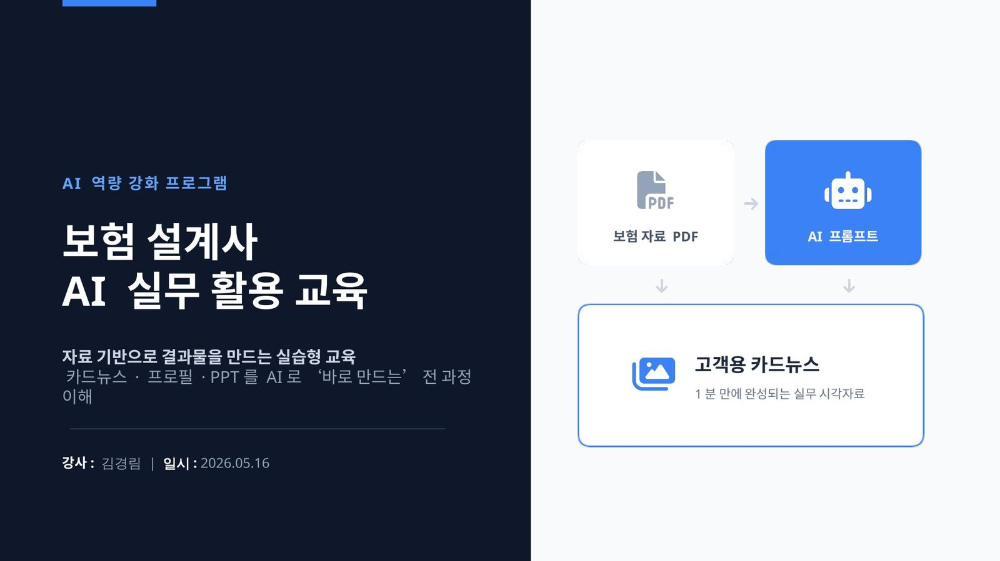
보험 설계사들은 이미 유료 결제까지 하며 AI를 쓰고 있었습니다. 그런데도 프롬프트 · 할루시네이션 · 이미지 가공 · PPT 자동화 어느 하나도 실무에 연결되지 않는 상태였습니다. "신기해서 써보긴 했다"에서 멈춰 있었습니다.
기존 요청사항을 그대로 진행하면 이론만 남는 강의가 되기 쉬웠습니다. 요청을 "고객 배포 결과물까지 완성한다"는 기준으로 재구조화했습니다.
"들으면 아는데 못 쓰겠어요"라는 익숙한 후기가 나오지 않도록, 아래 원칙을 세션 전체에 적용했습니다.
강의 2시간이지만, 산출물은 강의 이후에도 계속 사용될 수 있도록 표준화했습니다.
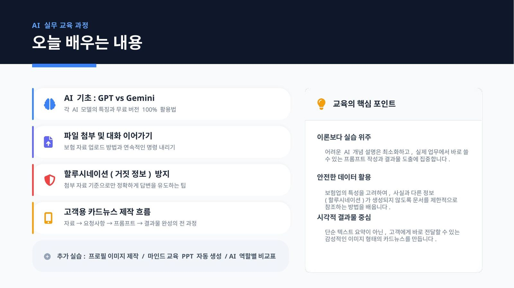
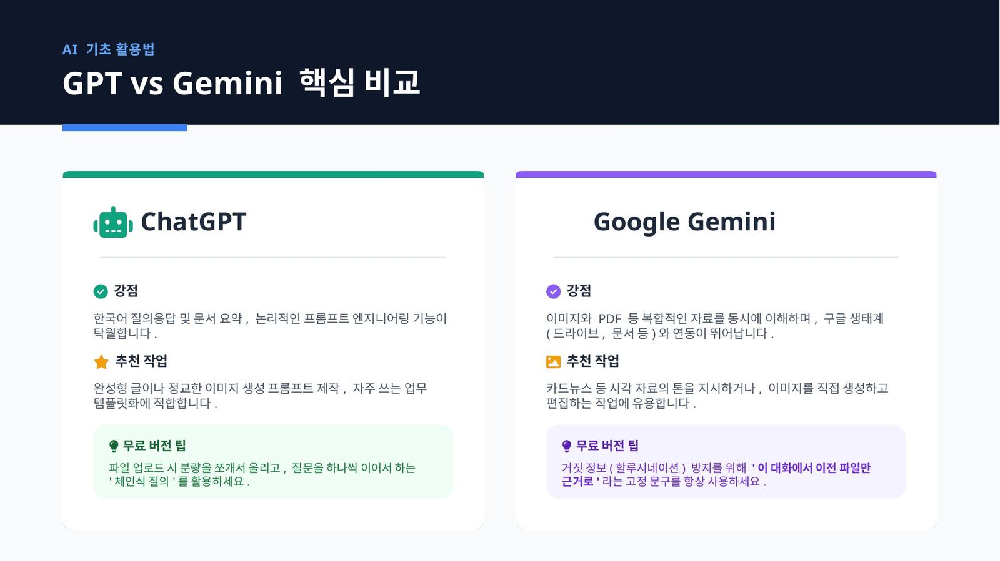
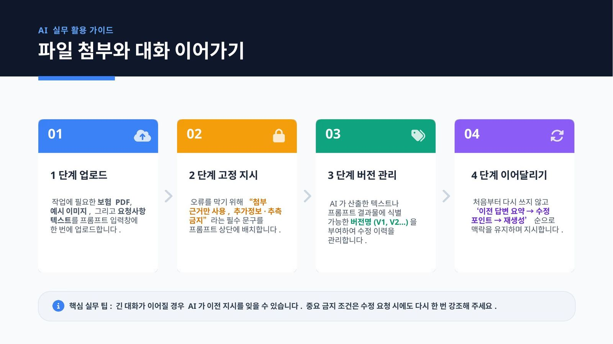
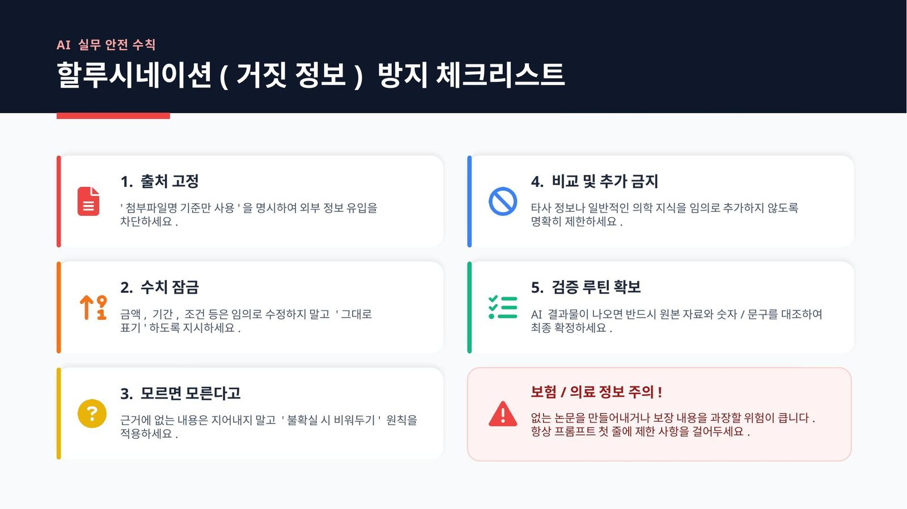
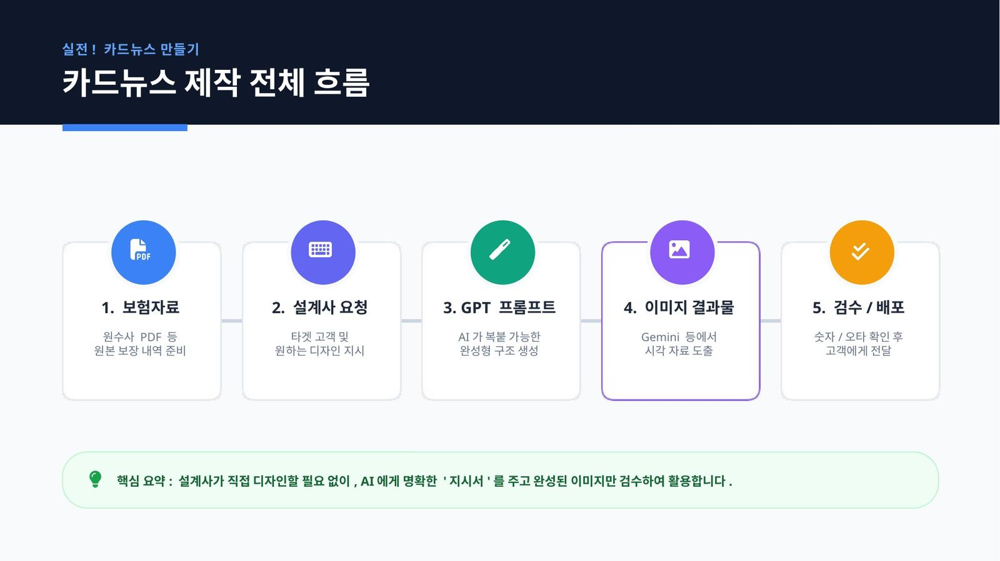
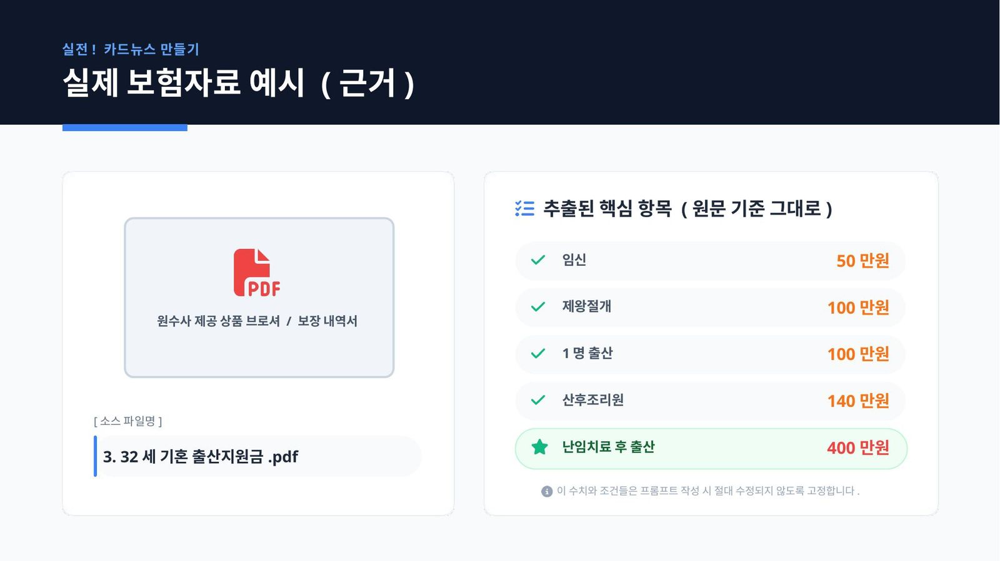
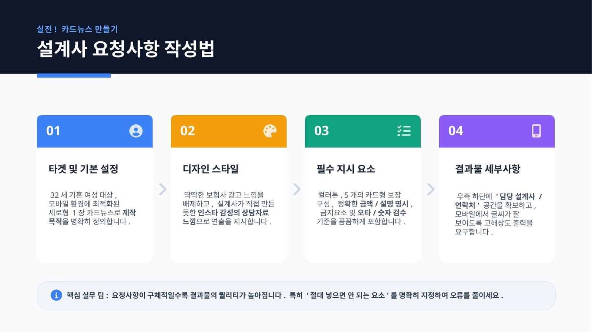
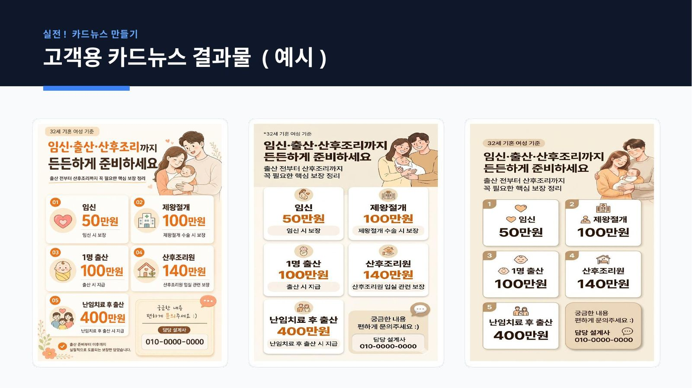
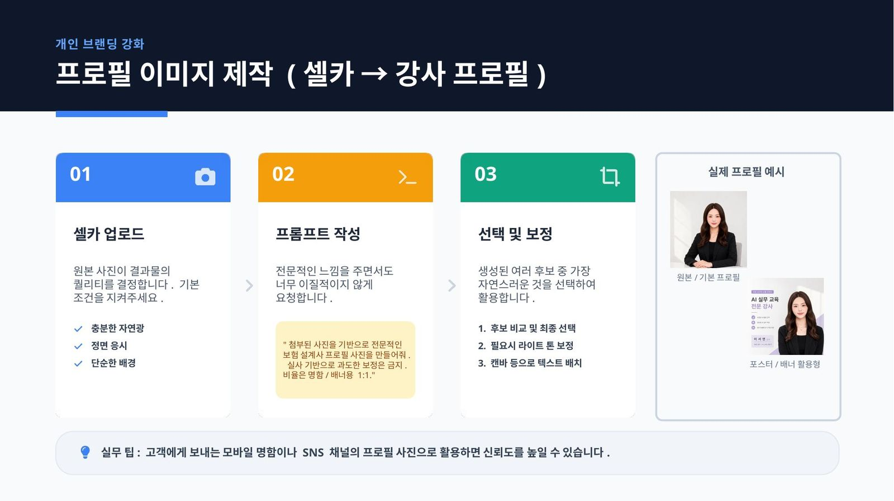
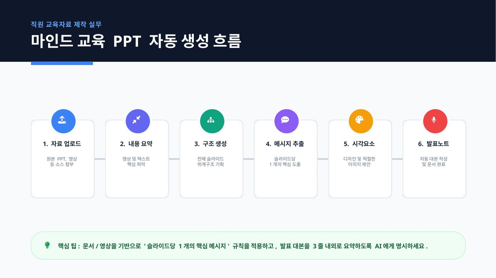
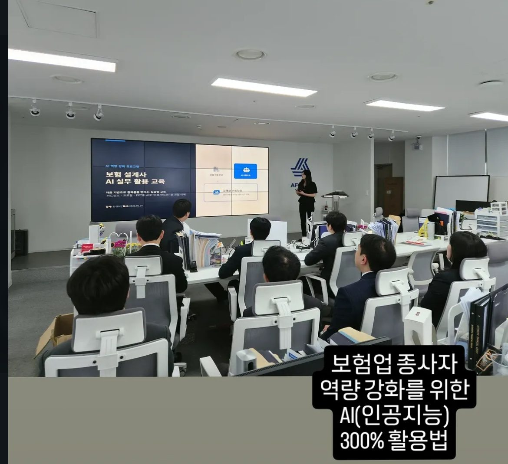
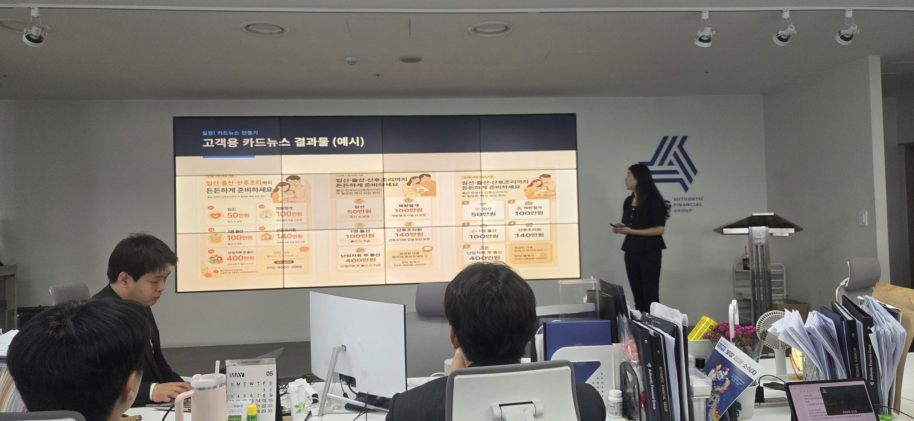
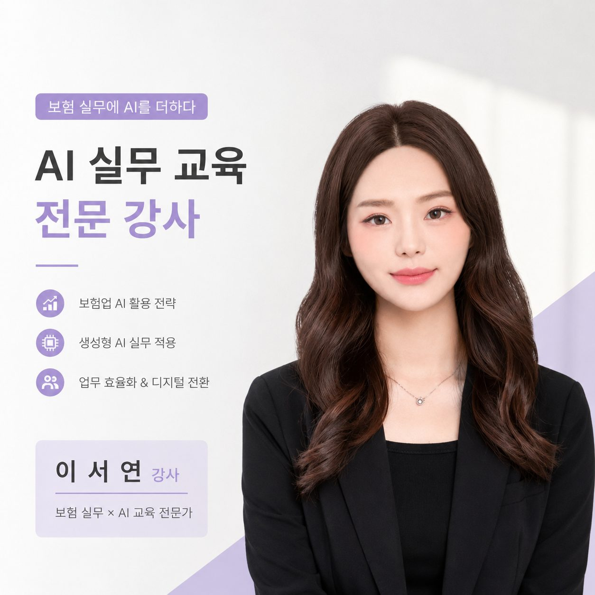
2026.05.16 강의 직후 받은 즉석 후기입니다. 익명 처리했습니다.
"AI 잘하는 사람"과 "업무 흐름 잘 아는 사람" 사이의 다리 역할이 교육자의 진짜 몫이라는 것을 다시 확인했습니다.
AI를 잘 안다고 해서 자동으로 실무 결과물이 나오지는 않습니다. "32세 기혼 여성 · 출산 지원금 시나리오"라는 구체적인 고객 상황이 있어야 프롬프트가 결과물이 되고, 결과물이 다음 날의 고객 상담으로 이어집니다. 이 다리 놓는 일이 앞으로도 AI 교육의 핵심이라고 봅니다.